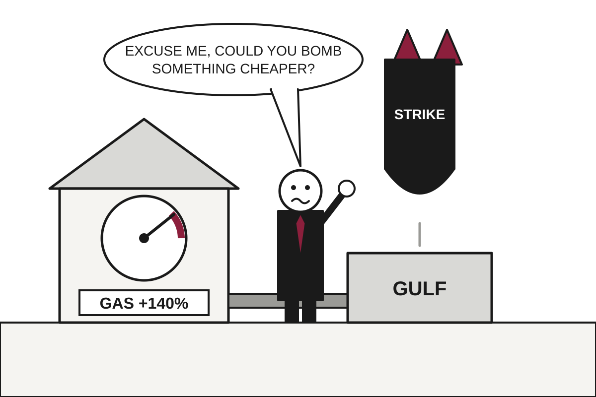

Europe Asks Washington to Please Stop Bombing Things Near Its Heating Bill
Western European governments that stayed quiet in February now urge restraint on Iran, as gas prices are up about 140 percent and Trump muses about a Cuban stopover.
The wire said: How is the US-Israeli war on Iran causing havoc in Europe? · Al Jazeera

Catch up
The US and Israel attacked Iran on February 28, and the war has disrupted oil and gas supplies through the Strait of Hormuz. Nearly eight months later, Washington is reportedly weighing renewed attacks, and European governments that initially avoided criticism are now warning against them.Why it matters
Higher energy, fuel and fertiliser costs are reaching European households just as winter arrives, and a new round of strikes could push prices higher still. The disagreement also tests how far NATO-style alliance commitments stretch when allies did not pick the war.Al Jazeera reported that Germany, Britain and other Western European powers, which said little when the US and Israel began bombing Iran, are now calling for diplomacy and warning against a renewed campaign. The shift did not come from a sudden discovery of pacifism. It came from the gas bill.
The numbers explain the change. European Commission President Ursula von der Leyen said on October 16 that Europe's imported fossil fuel bill had risen by 106 billion euros, gas prices were up about 140 percent since late February, and diesel prices had doubled. Translation: the continent is paying a war surcharge on a war it was not consulted about, and it arrives monthly.
Brent crude, the benchmark oil price, settled at $72.48 a barrel the day before the war began. It hit $126.41 at the end of April and, according to Al Jazeera, remains well above $100. Analysts cited by the outlet also point to urea fertiliser prices up roughly 70 percent and higher shipping insurance, which is how a conflict in the Gulf ends up in a loaf of bread in Lyon.
French Foreign Minister Jean-Noel Barrot, after a meeting in Istanbul with counterparts from Turkiye, Saudi Arabia, Pakistan and Egypt, said escalation would create "nothing but losers". He added that it would have serious consequences for hydrocarbon prices. Translation: the losers part is a moral point, and the hydrocarbon part is the one with a budget line.
Europe's response has been less a united front than a buffet. Germany said it would not restrict US use of bases such as Ramstein. Britain first withheld permission for the opening attacks, then allowed limited defensive strikes, then widened that to missile sites threatening shipping. France allowed support aircraft at Istres but blocked a weapons flight to Israel. Spain refused use of Rota and Moron and closed its airspace to US aircraft involved in the war, and Prime Minister Pedro Sanchez called the war "illegal, unjust and unjustified".
Iran's Foreign Ministry spokesperson, Esmaeil Baghaei, noted on X that Chancellor Friedrich Merz had said of Israel's June 2025 campaign: "This is the dirty work Israel is doing for all of us." Baghaei contrasted that with Berlin's current calls for restraint, then quoted Schiller. It is not every week that a foreign ministry spokesperson cites German classical drama at the Germans, and it may be the most efficient part of the diplomacy.
Meanwhile, The Guardian reported that President Trump, at a Florida rally days before the midterm elections, suggested ships returning from Iran could stop about 50 yards off Cuba and that Marco Rubio would then "finish up the deal". Voters, the paper noted, have been worried about the war's effect on prices from gas to groceries. Rubio followed with a post urging Cubans seeking change to act through a partnership with the CIA.
Cuba's deputy foreign minister, Carlos Fernandez de Cossio, said the US was "resorting to public recruitment for the CIA" and mocked the agency for selling its services like toothpaste. The Guardian also noted that Rubio wrote "discrete" where he likely meant "discreet", which is a notable error in a message about covert action.
The two stories share a logic. The war that was supposed to wind down has not, and its costs are being distributed to allies and voters while the next theatre is previewed at a rally. Watch whether Europe's restraint turns from statements into restrictions on bases and airspace, and whether the election changes the tone in Washington.
Satire based on reporting by Al Jazeera, The Guardian. Read the originals for the straight version.